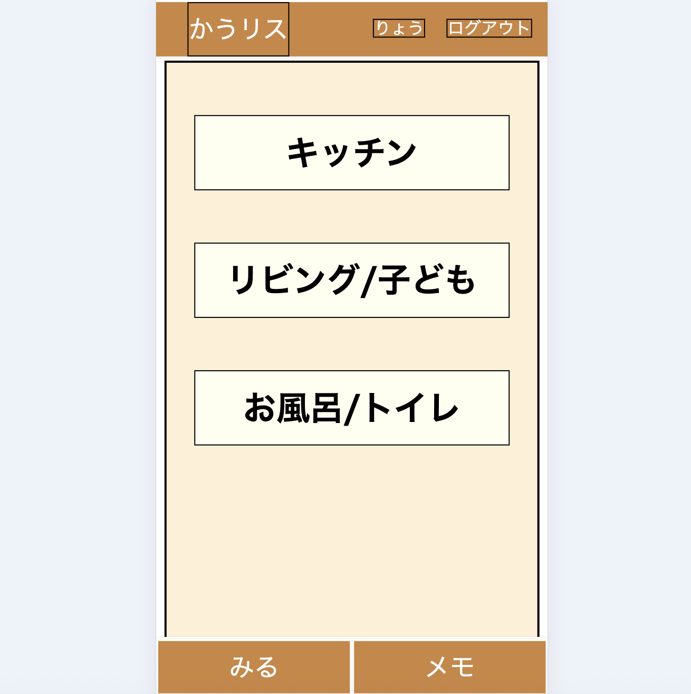

かうリス kaulis（買い物リストアプリ）
開発環境
Ruby / Ruby on Rails / MySQL / GitHub / Render or AWS / Visual Studio Code / Trello
-
概要
制作時間 70時間 URL https://kaulis.onrender.com/ ID PASS -
動作テスト
テスト用アカウント
mail testuser@test.com PASS testuser1234
OUTLINEアプリケーションの概要
オリジナルアプリとして、買い物リストアプリ「かうリス kaulis」を開発しました。
「あれ買わなきゃ！」と思い付いて「あとでメモしよ！」と家事の続きを始めたら、数分後「何買うんだったっけ？」と買うものを忘れてしまう…
日々そのような問題を抱えている、特に仕事と家庭の育児に追われている共働き世帯のお父さん、お母さんをターゲットとした、思いついた時に手間なくすぐに買い物リストにメモできるアプリです。
トップページには「キッチン」、「リビング/子供」、「お風呂/トイレ」と３つのカテゴリが表示されています。例えば「キッチン」をクリックすると、キッチン関係の買い物リストが表示され、チェックボックスのON/OFFによって、買う必要のある物はチェックが外れてリストの上の方に表示されます。
スクリーン左下の「みる」をクリックすると、「スーパー」、「ドラッグストア」、「オンラインショップ」という３つのお店ごとに、買う必要のあるものが表示されます。リストに表示されている物をお店で購入した後、リストのチェックボックスをクリックすると、リストから消去されます。
-
開発に至った経緯
「あれ買わなきゃ！」と思い付いて「あとでメモしよ！」と家事の続きを始めたら、数分後「何買うんだったっけ？」と買うものを忘れてしまう…
これは私自身、そして私の妻が、まさに今抱えている課題です。
「せっかくプログラミング勉強してるんだったら、こんなアプリを開発してよ！」という妻の一言から「思いついた時に手間なくすぐに買い物リストにメモできるアプリ」のアイデアを思い付き開発するに至りました。
-
開発で工夫したこと
UIデザインをシンプルにする、つまり手間なくすぐに使えることを基本にしました。スクリーンの下には「みる」「メモ」の２つだけボタンを配置し、「みる」でお店ごとの買い物リストを確認する、「メモ」でトップページに戻り、すぐにカテゴリー別にリストを操作できるようにしました。
カテゴリー別のリストでは、チェックボックスOFFの物（買う必要のある物）を上に配置、チェックボックスONの物（既に買ったもの）を下に配置し、一目で感覚的にリストのチェック状況を把握できるようにしました。
-
今後実装したいと思っていること
現在は買い物リストが既に初期データとして表示されています。今後、ユーザーが買い物リストの項目を自由に編集、追加、削除できるようにしたいと考えています。
登録されたユーザーの誰がチェックON/OFFしたのか（例：誰が購入したのか）がログで確認できるようにしたいと考えています。
Webアプリとしてだけでなく、スマホのネイティブアプリとして開発する予定です。